Git and AWS
Use
Git
for local and
remote
version control
while creating and managing cloud resources in
AWS
.
🎯 Objective
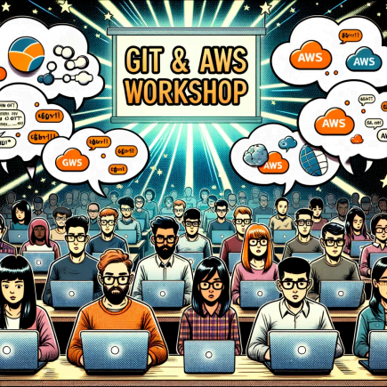
In this lab, we have two
main
objectives:
-
Revise what we have learned about the
version controlGIT andremoterepositoryonGitHub. -
Get familiar with Amazon Web Services on the Learner Lab and learn how to create
AWSEC2instances.
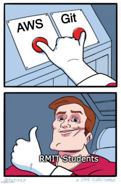
☁️ AWS Academy and your first EC2 instance
AWS
Academy Learner Lab offers a long-running lab environment suitable for student projects over a period designated by the educator.
Each student in an AWS Academy Learner Lab class will have a $50 AWS Platform Credit to use for the duration of the class.
Each session lasts for 4 hours by default, although students can extend a session to run longer by pressing the start button to reset their session timer. At the end of each session, any resources students create will persist. However, we automatically shut
EC2
instances down. Other resources, such as RDS instances, keep running. Keep in mind that we do not stop some AWS features, so they can still incur charges between sessions.
Students may wish to delete those types of resources and recreate them as needed to test their work during a session. Students have access to this environment for the duration of the class in which they are enrolled. When the class ends, student access to the learner lab will also end.
This guide provides you with instructions on how to use AWS Academy Learner Labs. These instructions apply to both AWS Academy Learner Lab – Foundational Services and AWS Academy Learner Lab – Association Services. This guide covers setting up and logging into your AWS Academy Account, accessing your Learner Lab, and using your Learner Lab.
🔑 Set up and sign in to AWS Academy
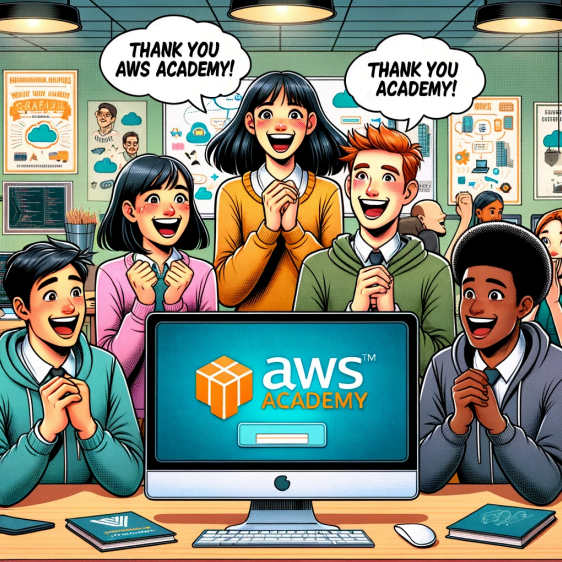
-
Set up your
AWSAcademy account by responding to your email invitation and clicking Get Started. The email invitation will come from AWS Academy <notifications@instructure.com>. If you do not see the email, check your junk, spam, or promotional mail folder. Here is a sample invitation email:
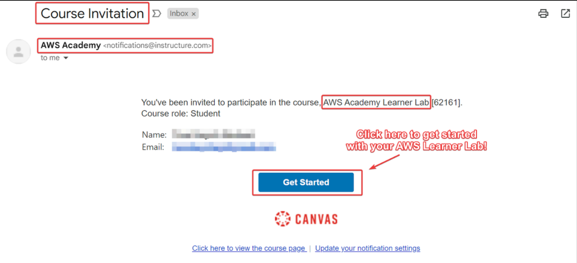
-
Go to https://www.awsacademy.com/LMS_Login to login.
-
Press Student Login.
-
Use the email address that received the email invitation for the email field.
-
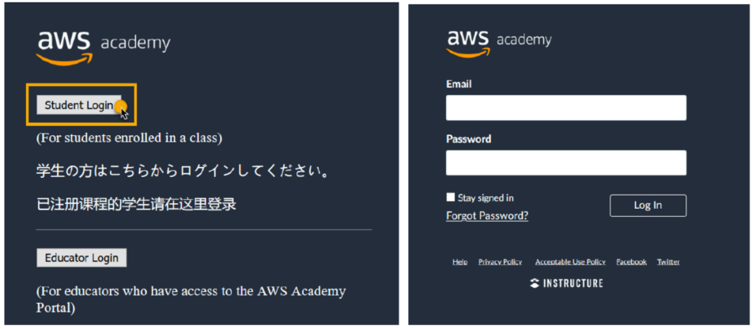
🧪 Open the Learner Lab
-
In the
AWSAcademy Dashboard, click on the Learner Lab you wish to use. Students invited to more than one course/learner lab will see multiple tiles on the dashboard.
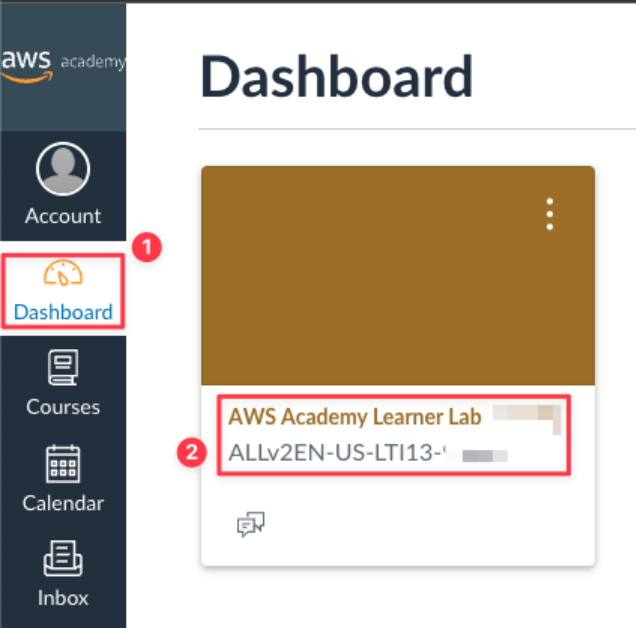
-
Select Modules.
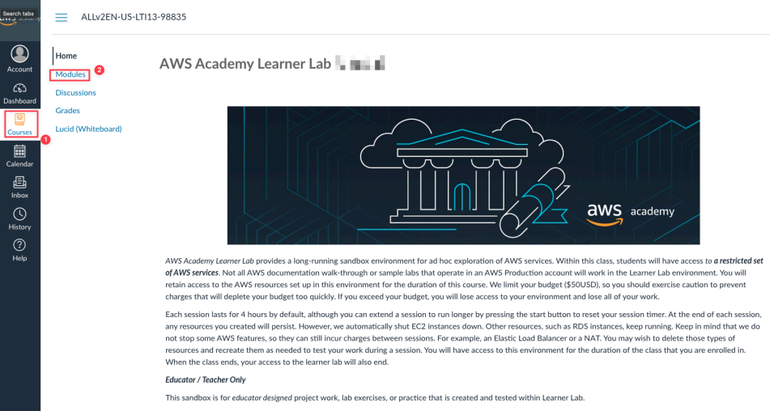
-
Select the Learner Lab item.
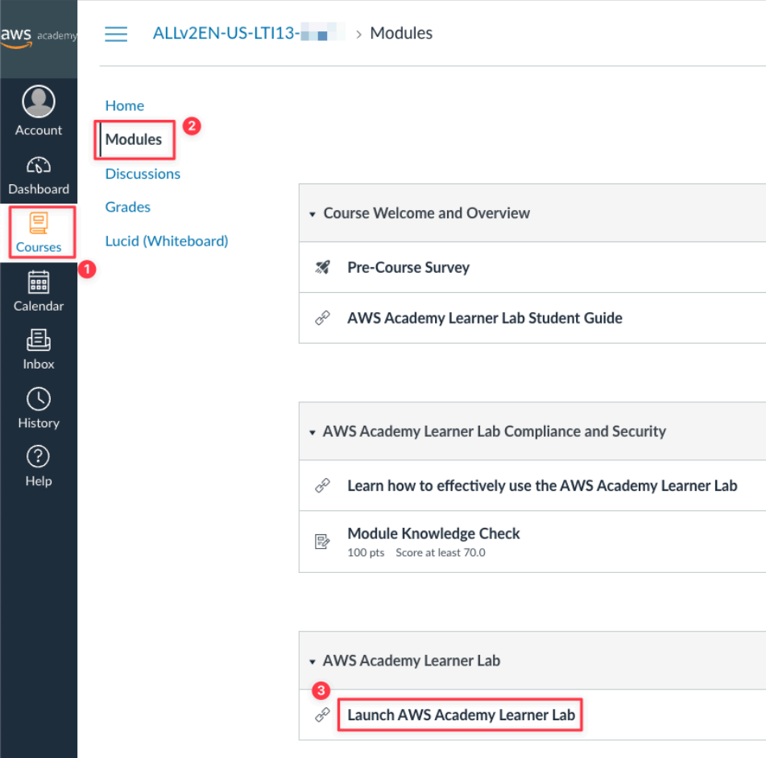
🎛️ Use the Learner Lab
-
The instructions for using the lab environment are to the right of the console window. You can return to the instructions by pressing the Readme button. The instructions include important details about how to access and use your
AWSaccount, the AWS Services available to you, and the restrictions placed on some AWS Services.
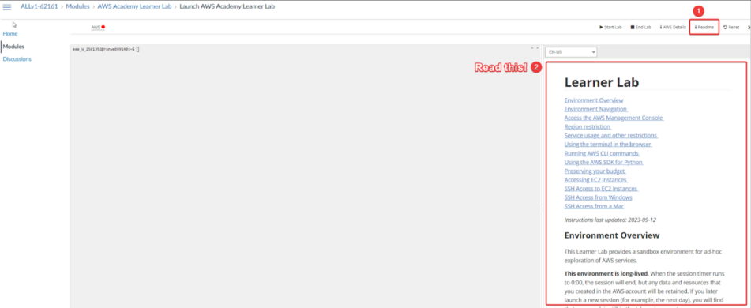
-
Start the lab by selecting Start Lab.
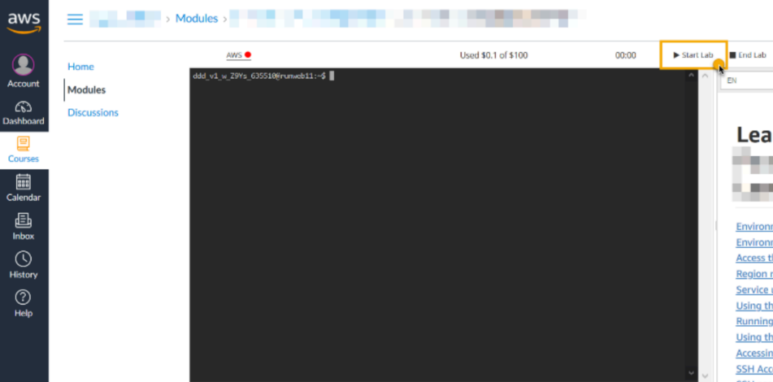
-
When the dot next to AWS turns yellow , your lab environment is still being prepared to use. So wait for it!
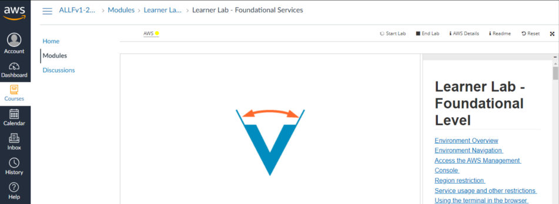
-
When the dot next to AWS turns green , your lab environment is ready to use . Click AWS to launch the AWS Console in a new tab.
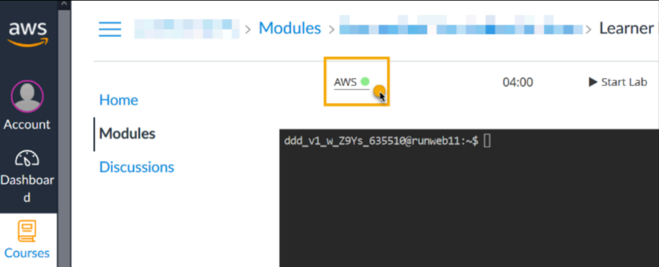
-
A new tab will open the AWS Management Console when you click on AWS. The system logged you into a temporary AWS account and the lab session will automatically end when the session timer expires. The system will save your work when you end the session or the session timer expires.
-
Note: The system will suspend your
EC2instances at the end of a session and they will restart when you start the lab again. Press Start if you need to start up a new lab session.
-
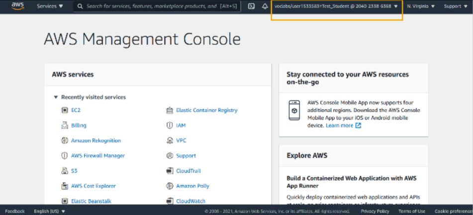
-
Alternatively, you can use the terminal window to the left of the instructions to use the AWS Command-Line Interface (CLI) to interact with your account.
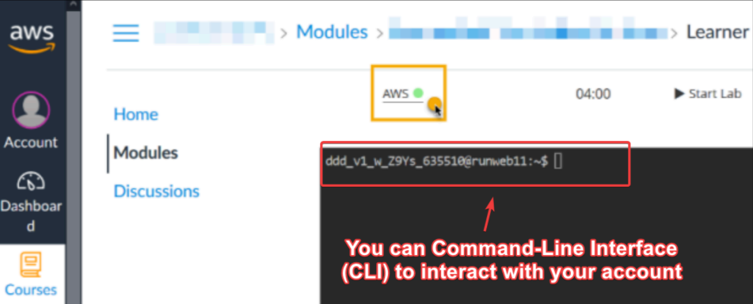
-
Return to the AWS Academy LMS tab to view the lab instructions or to control your lab session.
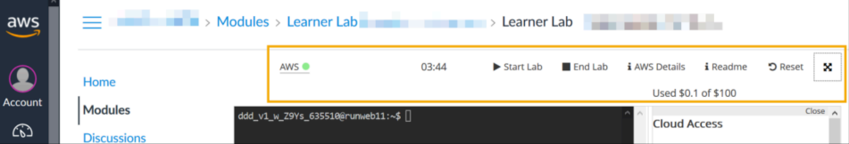
-
To monitor spending, see the area at the top of the lab instructions. Note: This information is provided by the AWS Budgets service and might be delayed by up to 8 hours. This is an approximate view of spending.
-
Note: If you spend the entire budget, you will lose all of your work, and the system will deactivate your temporary AWS account. Your $50 budget is sufficient for most academic projects, as long as you take care to stay within the budget guidelines.
-
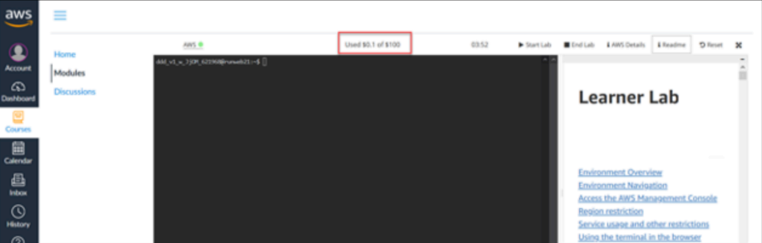
-
You can monitor your remaining session time at the top of the lab. Note: If you are actively working and you need more time, you can reset your session timer by pressing Start Lab again.
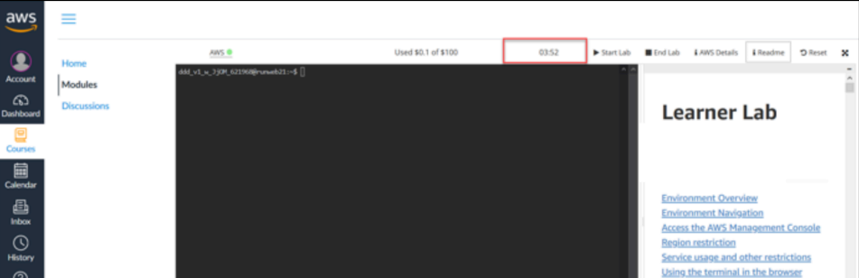
-
To delete all resources that you have configured in a lab and start with a fresh AWS account, choose Reset . Important: All work will be lost and cannot be recovered.
-
This option will not reset your budget. Any spending that you have incurred will continue to be tracked.
-
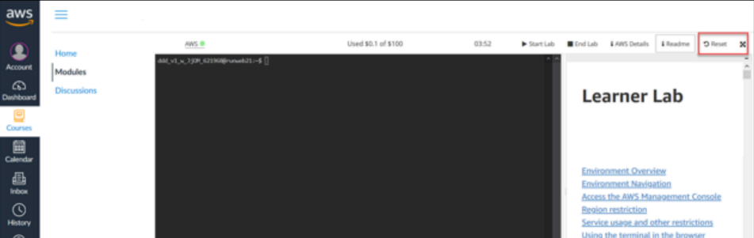
-
When you are finished with the session, choose End Lab .
-
Any running Amazon Elastic Compute Cloud (Amazon EC2) instances will be stopped. If you return and restart the lab, any stopped EC2 instances will restart and any other resources that you configured will still be available.
-
Important : If you created and started other AWS resources such as a NAT gateway or Amazon Relational Database Service (Amazon RDS) database, those resources will continue to run in the background and incur charges, even outside of your lab session time.
-
[Important Note] Due to an AWS Learner Lab policy, our AWS lab environment is restricted to only us-east-1 and us-west-2 regions. Therefore, please make sure to select either one of these regions when you start your lab exercises.
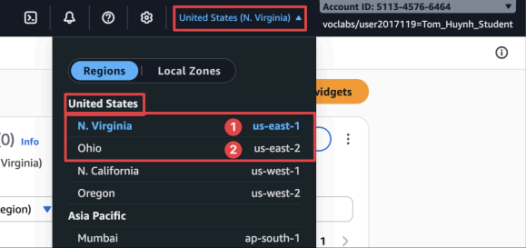
☁️ Create your first EC2 instance
-
First, let's open the
AWSconsole:
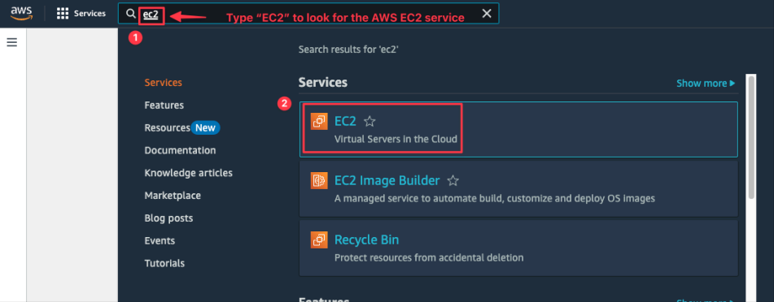
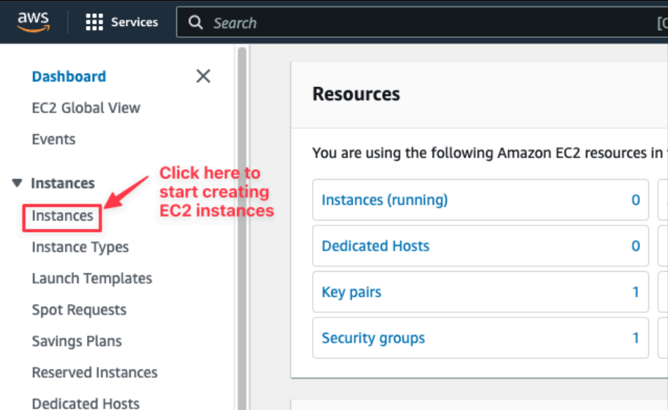
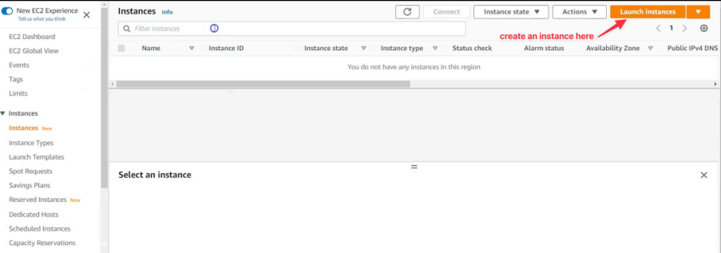
-
Here are the settings of our new
EC2Linux instance:
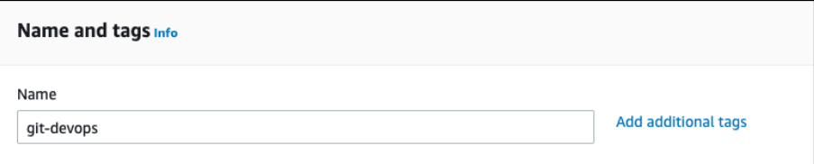
-
Choosing the default
AMIof AWS (Amazon Linux 2023) is the best to run on EC2 instances. Indeed, this AMI of AWS is based on a version of RHEL (Red Hat Enterprise Linux) - Fedora . Amazon has customised it to suit AWS environments, optimising it for cloud use with packages, settings, and configurations tailored to improve performance, security, and compatibility with AWS services
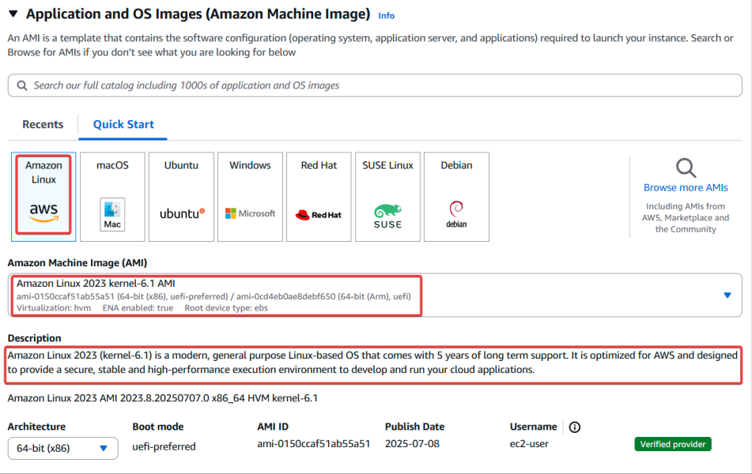
-
Because this is a learning environment, choose the smallest instance type that satisfies the lab requirements:
-
The t3.micro is a low-cost Amazon EC2 instance with 2 vCPU and 1 GB RAM, ideal for lightweight workloads. It offers burstable performance using a CPU credit system, making it suitable for small web servers, testing, and development.
-
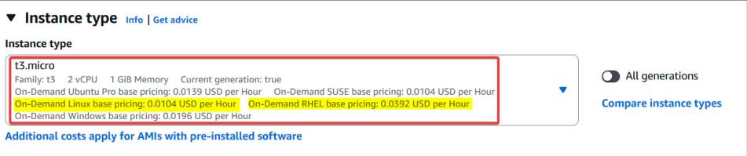
-
Create a new key pair to securely
SSHto your EC2 instance:
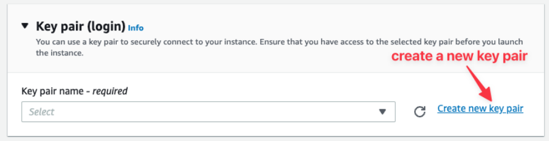
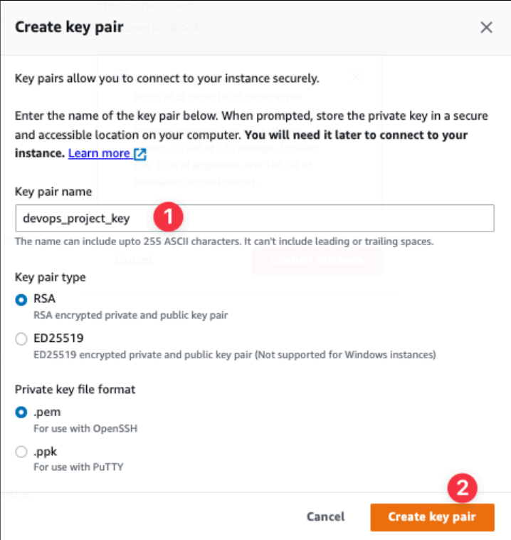
-
Now the browser should download a
devops_project_key.pemto your computer. Please keep this file safe (as we will try to use only one key for all of our EC2 instances in this course):
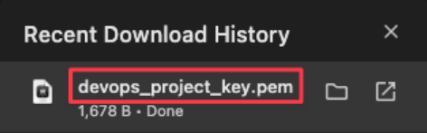
-
Now, our EC2 instance will use that new SSH key “
devops_project_key" as a way for us to pass authentication and login to the EC2 instance using the key.
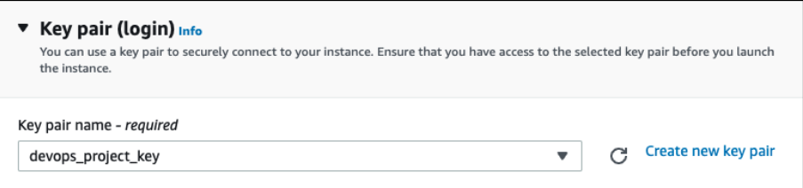
-
We need to create a
security group(firewall rules) to secure and protect our VMs:
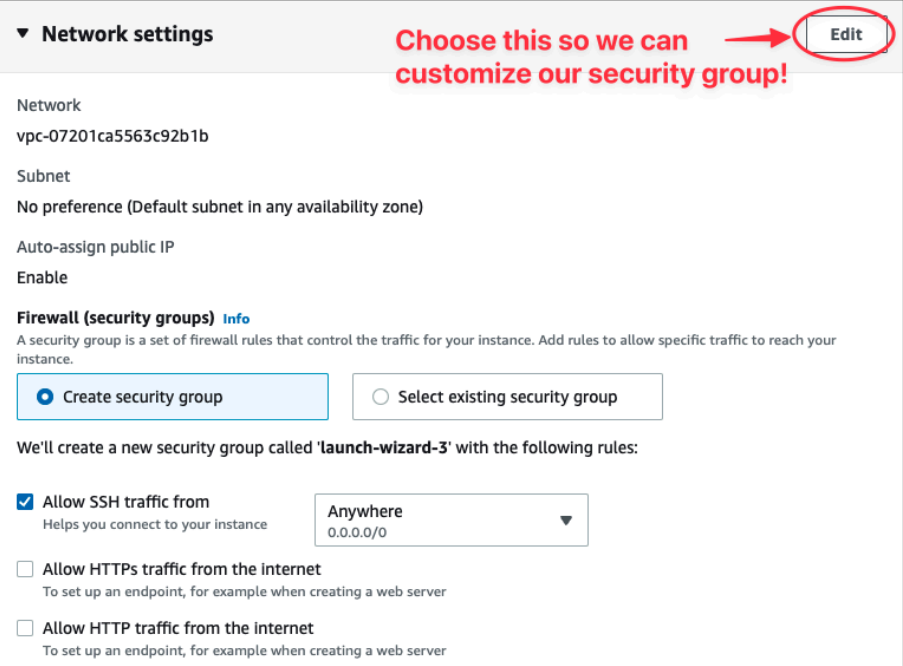
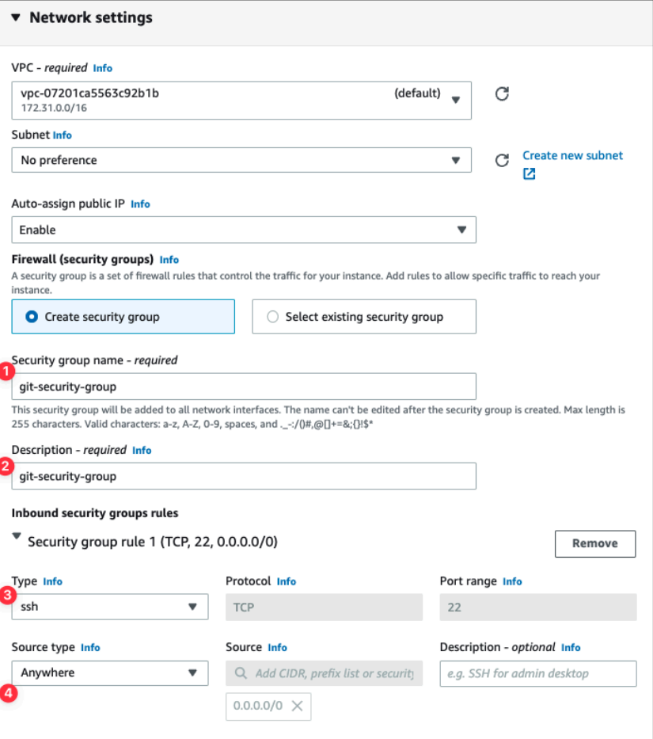
-
The default 8 GB for storage is plenty enough for our EC2 server:
-
gp3 is a type of Amazon EBS (Elastic Block Store) SSD storage used with EC2 instances. It offers faster performance and lower cost than the older gp2. With gp3, you get 3,000 IOPS by default, and you can increase speed without changing the storage size. It’s great for things like boot volumes, apps, and small databases.
-
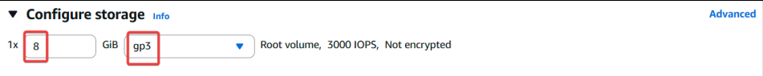
-
After that, review the configuration settings and launch the instance:
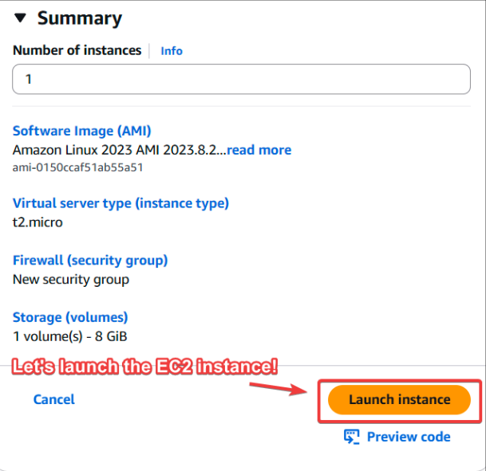
-
AWS will announce that it has started to create a new EC2 instance based on your configuration:
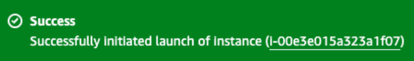
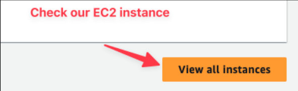
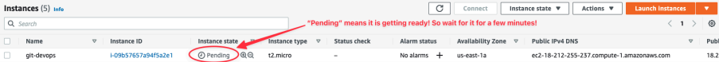
-
In the EC2 dashboard you should see the
git-devops EC2 running:
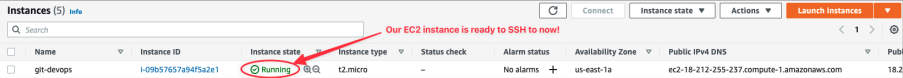
-
You can check out all related information about your EC2 instance here. The most important information is the Public IP address of your EC2 instance which will allow us to connect SSH to the server to control it:
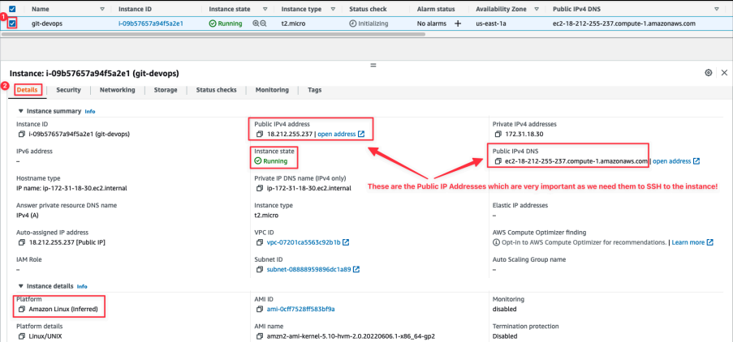
-
Now we will use the SSH key to SSH to the EC2 instance, there are different instructions for different operating systems of your laptop (Windows 10, 11, macOS or Linux):
🐧 macOS or Linux (default path)
-
[For macOS and Linux (like Ubuntu) users], we just need to use Terminals:
-
Open a terminal window, and change directory cd to the directory where the
.pemfile was downloaded. For example, run this command, if it was saved to your Downloads directory:
-
cd ~/Downloads-
Change the permissions on the key to be read only, by running this command:
chmod 400 devops_project_key.pem-
For accuracy, copy the instance-specific SSH command shown by AWS:
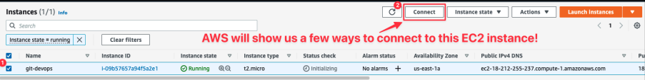
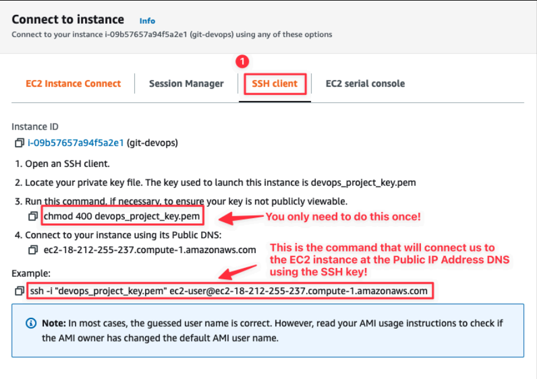
-
Run that command in the terminal:
ssh -i "devops_project_key.pem" ec2-user@ec2-18-212-255-237.compute-1.amazonaws.com-
Note: Copy the command for your own instance because each EC2 instance has a different public DNS name.
-
The first time you connect to your EC2 instance, you need to type “yes” to add that new SSH connection to known hosts:
-
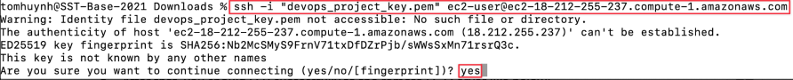
-
After that, you should SSH successfully to the
remoteEC2 Server like below:
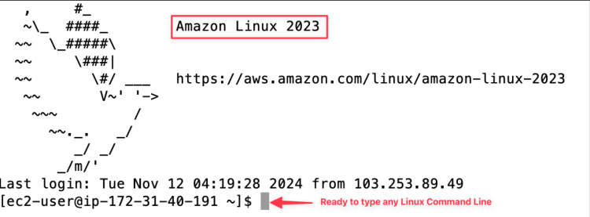
-
Now you can treat this as the usual Fedora VM or CentOS VM, we have been dealing with so far in week 1 and 2. However, the difference is that this VM is actually a cloud server running on a remote Amazon data centre.
-
You can play around with CLI commands you learn so far, for example:
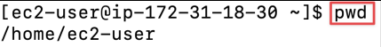
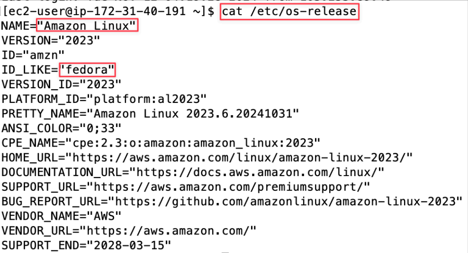
Suggestion
: you should move your SSH key to a more secure folder like ~/
.ssh
/keys so you remember where your SSH key is for the next time you want to SSH to the EC2 instance!
🪟 Windows 10 or 11
-
[For Windows 10 or 11 users], you can try to SSH using PowerShell or Command Prompt (cmd). These instructions are for Windows 10 or 11 users only:
-
Open PowerShell as Administrator
-
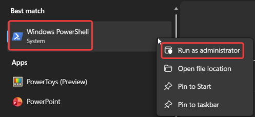
-
You can check whether OpenSSH Client is already installed:
ssh -V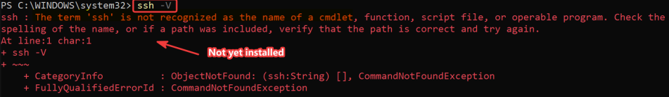
-
If SSH is not yet installed, then install it if need:
-
Windows 10: Settings → Apps → Optional Features
-
Windows 11: Settings → System → Optional features
-
Search for OpenSSH Client
-
Select it and click Install
-
-
-
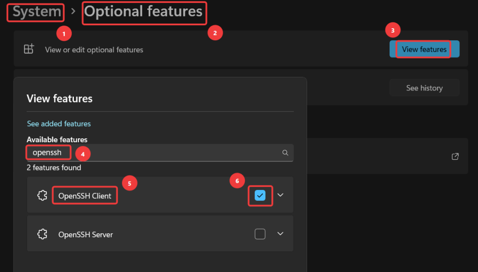
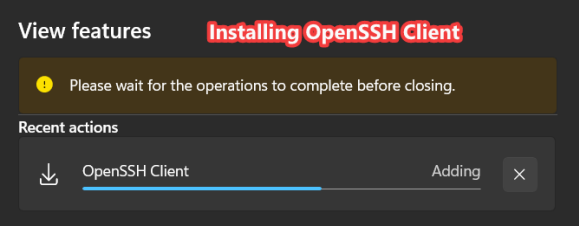
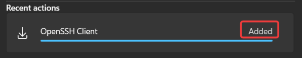
-
Reopen PowerShell to check if SSH is already installed:
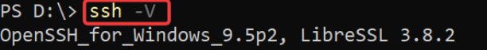
-
Next, please change the current directory into where you store that ssh pem file key. (you can use “cd”). Try to copy the example SSH command from AWS EC2:
-
ssh
-ipath_to_ssh_keyusername@ip-or-domain-name-of-host-
Here is example:
-
-
ssh -i "devops_project_key.pem" ec2-user@ec2-18-212-255-237.compute-1.amazonaws.com-
SSH is working now, you've just hit the "permissions too open" error, which is the expected next step. The key file needs its permissions locked down so only your user can read it.
-
Run these two commands in PowerShell as the Administrator :
-
/reset clears the custom entries back to inherited defaults.
-
/inheritance:r then removes all inherited permissions (this is what strips out Authenticated Users, Users, Administrators, and SYSTEM).
-
/grant:r adds back read access for just your account.
-
-
-
icacls "devops_key.pem" /reset
icacls "devops_key.pem" /inheritance:r
icacls "devops_key.pem" /grant:r "$($env:USERNAME):(R)"-
To verify only your user is listed afterward:
-
That's exactly what you want below, only
your_username:(R) and nothing else. The key is now properly locked down.
-
icacls "devops_key.pem"-
Try to SSH to EC2 again:
🖥️ Windows 7, 8 or XP
-
[For older Windows users (Windows 8, 7 or XP)], you can try to SSH using Putty or Mobaxterm. These instructions are for older Windows users only:
-
You will use PuTTY to SSH to Amazon EC2 instances. If you do not have PuTTY installed on your computer, download it here.
-
Open putty.exe
-
Configure PuTTY to not timeout:
-
Choose Connection
-
Set Seconds between keepalives to 30
-
-
This allows you to keep the PuTTY session open for a longer period of time.
-
Configure your PuTTY session:
-
Choose Session
-
Host Name (or IP address): Copy and paste the IPv4 Public IP address for the instance.
-
-
Back in PuTTy, in the Connection list, expand SSH
-
Choose Auth (don't expand it)
-
Choose Browse
-
Browse to and select the
.pemfile that you downloaded -
Choose Open to select it
-
Choose Open
-
-
Choose Yes, to trust the host and connect to it.
-
When prompted login as, enter: ec2-user
-
This will connect you to the EC2 instance.
-
-
📘 Intro to Version Control
GitHub
, in a nutshell, is the way to share files with other people collaboratively without overwriting other people's stuff. GitHub is sort of a community, and there are a lot of open-source projects, which means the project's code is available to look at. GitHub is a web-based platform, and it is based on a technology called
Git
.
Git is a piece of software called
version control
. It is a fancy way of saying Keeps track of changes to code. Git has a lot of other features that are useful for software developers. So if you're programming, eventually you have to learn Git at some point.
Collaboration checkpoint: If two students edit the same line, which part can Git record automatically and which part still requires a human decision during the merge?
🎮 Optional: Practise Git with Learn Git Branching
Playground: https://learngitbranching.js.org/
This exercise will help you learn the basics and some advanced features of
Git
and
GitHub
. You'll use the interactive platform LearnGitBranching for hands-on practice.
-
Getting Started:
-
Go to LearnGitBranching and click "Start Learning" or "Sandbox".
-
Choose your language if asked.
-
-
Complete Main Module Exercises:
-
Start with the Introduction Sequence in the Main module to learn fundamental
Gitcommands. -
Continue with the Ramping Up section to explore more about
branchesand how to reorganize them withrebase.
-
-
Move to Remote Module Exercises:
-
After finishing the Main module, go to the Remote module.
-
Complete the exercises in Push & Pull -- Git Remotes! to learn how to connect and work with
remoterepositories.
-
-
Tips for Using LearnGitBranching:
-
Follow the instructions for each exercise.
-
Use the visuals to see how your actions affect the Git tree.
-
If stuck, use the "Hint" button for tips.
-
-
Learning Goals:
-
Get comfortable with basic Git operations.
-
Understand how to manage branches and handle merges.
-
Learn how to
pushto andpullfrom remote repositories effectively.
-
Ideally, try your best to finish these recommended exercises:
Finish all the exercises to improve your understanding of Git and
GitHub
. Feel free to share your experiences or questions with others. This knowledge is essential for working on software development projects.
☁️ Git practice on AWS EC2
To start, please:
-
Ready to play around with CLI commands in the challenges below on the
AWSinstance:
🧪 Challenge 0: Explore a local Git repository
-
If this
AMIimage on yourAWSEC2instance does not haveGit, we can install Git command:
sudo yum install git -yQuestion: why do we need to have “sudo” and “-y”?
-
Enter your git information for the local
repository(only need to do once)-
Explanation :
-
The commands git config
--globaluser.email "you@example.com" and git config--globaluser.name "Your Name" set your email and name as the default identity for all your Gitcommitson that computer. -
The
--globaloption applies these settings across all Gitrepositoriesyou work with on that machine. Replace "you@example.com" and "Your Name" with your actual email and name.
-
-
git config --global user.email "you@example.com"
git config --global user.name "Your Name"-
Create a new folder so we can work on
mkdir my_project-
Change current working directory to that
my_projectdirectory
cd my_project-
List all files and folders (including hidden ones -a and in long format -l)
ls -laQuestion: what directories do you see in this empty directory?
-
Initialize the git folder
git init
You will see some hints from Git, but you can safely ignore it! Long story short, it tries to tell you that the default
main
branch
name is “
master
”. However, the default main branch in other
remote
repositories, like
GitHub
, is “main” instead of “master”.
Question: Could you guess why they prefer the name “main” instead of “master” based on the history of America? Hint : political reasons.
-
Rename the local default branch from
mastertomainso it matches the GitHub default:
git branch -m main-
Set
mainas the default initial branch for future repositories:
git config --global init.defaultBranch main-
List all files and folders again (including hidden ones -a and in long format -l)
ls -laQuestion : Do you notice any special folder?
-
Check current status of git
git statusQuestion : What does git status tell you ?
-
Check log of all the git commits
git logQuestion : What does it try to tell you?
-
That's cool. You have made your first git
commit! Let's add more files!
touch file2.py
touch file3.py
echo 'print("Hello")' >> file2.py
echo 'print("Bonjour")' >> file3.py-
Check current status of git again
git statusQuestion: Can you figure out what it means by “untracked files”?
-
Let git track that new file for changes (Staged)
git add .Question: What does . means this time? And what does “git add” try to do?
-
Check current status of git again
git statusQuestion: Do you still see “untracked files”? Why or Why not?
-
You are happy with these changes and want to finalize your change and really commit to the change!
git commit -m "Two more python files are added"Question : what does “git commit” try to do? What does “-m” do?
-
Check current status of git again
git statusQuestion : What do you see changed this time?
-
Check the history of all commits
git logQuestion : Do you see your commit and its message?
-
Check the names of all
branches:
git branch -aQuestion : Can you see how many branches you have and what is your current branch ?
-
Create a new branch
new_feature
git branch new_featureQuestion : Why do we need to create another branch? How about we just always work on the main branch?
-
Check the names of all branches again:
git branch -aQuestion : Can you see how many branches you have and what is your current branch ?
-
Switch to that new branch “
new_feature”:
git checkout new_feature-
Check the names of all branches again:
git branch -a
Question
: Do you see your current branch has changed to the new branch “
new_feature
” ?
-
That's cool. You have made your first branch! Let's add more files to that branch!
touch file4.py
touch file5.py
echo 'print("cam on")' >> file4.py
echo 'print("thank you")' >> file5.py-
Check current status of git again
git status-
Let git track that new file for changes (Staged)
git add .-
Check current status of git again
git status-
Finalize your change and really commit to the change (Committed)
git commit -m "New files are added on the new branch"-
Check current status of git again
git status-
Check log of all the git commits
git log-
Switch back to main branch
git checkout main-
List all files again:
ls -la
Question:
Can you see what has changed at the moment you switch back to the main branch from
new_feature
branch? Is there any file missing? Why is that?
Question:
What will happen if you switch back to
new_feature
branch from the main branch?
-
Hint: what happens to
file4.pyandfile5.py? -
Switch back to that
new_featurebranch
git checkout new_featureQuestion: Can you see what has changed you expected?
-
Switch back to that main branch
git checkout main-
If you are happy with what is on the
new_featurebranch, let'smergeit to the main branch!
git merge new_feature-
See what is on the git log on the main branch
git log-
Let's add some new files and content to main branch
touch file6.py
echo "This is pretty new content" >> file6.py-
See what is on the git log on the main branch
git status-
Let's track it (stage) and commit it
git add .
git commit -m "added file6.py"-
Now, you switch back to
new_featurebranch
git checkout new_feature
Question
: you are back to the
new_feature
branch, what will happen to
file6.py
?
-
Now, if we want the new content of main branch to be on
new_featurebranch, we need to merge main branch back tonew_featurebranch
git merge mainThat's pretty much the basic local Git!
-
If you want to check the compact (shorter and neat) version of git log then run this command:
git log --graph --decorate --onelineQuestion : Does it look cleaner for you?
Remember these commands on local Git:
-
git init
-
git status
-
git add .
-
git commit -m "xxx"
-
git log
-
git branch -a
-
git branch
my_new_branch -
git
checkoutmy_new_branch -
git merge
other_branch
🧪 Challenge 1: Work with a remote GitHub repository
Now
time
to
move
online
to
practise
Git
commands
on
actual
GitHub
repositories
!
How to set up a new GitHub
repository
📦 Step 1: Create a GitHub repository
-
Go to https://github.com/
-
In the upper-right corner of any page, use the drop-down menu, and select New.
-
Type a short, memorable name for your
repository. For example, "my_new_project".
-
Optionally, add a description of your repository. For example, "Learning DevOps at RMIT"
-
Choose public visibility (Anyone can see, and
checkoutyour GitHub repository).
-
Untick to initialise this repository without a
READMEfile to keep things simple when wepushit! However, later on, it is important to add a README file which is important if you want other people to understand what and how to use your project.
-
For a licence: Since we are learning so we can skip this and choose None! However, later on if you are doing a serious project then it’s better to add a licence so other people on the internet will know how much you are willing for them to reuse parts of your code! The default good one is “MIT License” which is meant to be extremely straightforward and open. It permits users to do anything with a given project as long as they credit the developer and don't hold him or her liable for the project's use.
-
Click Create repository.
🔗 Step 2: Connect the local repository to GitHub
-
Note: You can find the HTTPS URL of your
GitHubrepo here:
-
Here are two ways for you to get started with a GitHub repo:
-
Option 1 (Recommended in this lab): Push an existing
repositoryfrom the command line
-
git remote add origin https://github.com/your_github_name/your_git_repo_name.git
git push -u origin main-
Option 2 (Recommended in other cases): Create a new repository on the command line
git clone https://github.com/your_github_name/your_git_repo_name.git
Choose option 2 if you want to create a fresh new local repo (offline) which connects to your
remote
repo (online). This is an easier option if you want to start fresh!
In
our
case,
you've
already
created
a
local
repo
on
your
AWS
EC2
instance
so
you
can
choose
option
1
to
connect
your
remote
repository
(online)
to
your
local
repository
(offline)!
-
Let’s switch back to the
mainbranch:
git checkout main-
originis a local name used to refer to the remote repository. It could be called anything, but origin is a convention that is often used by default ingitand GitHub, so it’s helpful to stick with this unless there’s a reason not to.
git remote add origin https://github.com/your_github_name/your_git_repo_name.git-
We can check if our command has worked by list all
remotes:
git remote -v-
Now we will
pushthe changes from our local repository to the repository on GitHub:
git push -u origin main-
GitHub no longer supports password-based authentication for Git operations:
-
We need to generate a GitHub personal access token (PAT) to authenticate and push the existing
commitson the local repository to the remote repository on GitHub:
-
Select these permissions of the access code to be able to have full control of your private
repositories, full controls of your team projects and also able to delete repositories:-
repo = Full control of private repositories
-
admin:org = Full control of orgs and teams, read and write org projects
-
delete_repo= Delete repositories
-
-
Remember to copy this personal access token somewhere safe!
-
Now you can use this personal access token to authenticate to push to your remote repository on GitHub:
Using a personal access token is straightforward to set up, but repeatedly entering it for every push is inconvenient.
-
You should now see that all commits completed in Challenge 0 have been pushed to the remote repository on GitHub:
-
You can see that the list of our commits in the local repository has been pushed to the remote repository on GitHub:
Question:
Did you notice your
new_feature
branch is missing on the GitHub remote repository? Can you figure out how to push the
new_feature
branch from the local repository also to the remote repository?
Hint : just switch to that brand and try to git push and see what happens then follow the instructions of Git.
🔄 Step 3: Synchronise local and remote repositories
After you follow the step 2, your local
git
should be connected with your
remote
git and you did your first
push
to the remote git repo.
git branch -a
Question
: Do you notice anything different in your
branches
? What is the "
remotes/origin/main
"
branch
?
-
Let's switch back to the
mainbranch
git checkout main-
Let's
pullany new update of content from the remote git
git pullBecause there is no new content on your remote git so the result is "Already up to date."
-
Check your git log
git log-
Okie, it's time to add some file to the local git, add,
commitand push it to the remote git
touch my_greeting.txt
echo Hello From Local Computer >> my_greeting.txt
git add .git commit -m "add my_greeting.txt on my local"These steps so far happen on the local git or on your laptop.
-
Let's push the new commit to the remote git
-
You might need to enter the
GitHubaccess token again for authentication before you can push to the GitHubrepository.
-
git pushThat's it! Now your new changes are pushed to the remote git! That's how you can work on local git and remote git!
Remember to do git pull first before you do git push!
How to setup
SSH
key-pair for GitHub authentication
Note:
A more secure and convenient option is to authenticate to GitHub with an SSH key pair (a public key and a private key). The
EC2
instance keeps the private key, while GitHub stores the public key. Together, they verify the connection without sending a password. Follow the setup below or read Section 7.3.
Follow these steps to set up GitHub authentication with an SSH key pair:
-
On your EC2 instance, generate a new SSH key pair:
ssh-keygen -t rsa -b 4096 -C "your_email@example.com"-
When prompted, press Enter to save the key to the default location. You can skip the passphrase by just pressing Enter to have an empty passphrase.
-
Add Your SSH Key to the
ssh-agent-
Start the ssh-agent in the background:
-
eval "$(ssh-agent -s)"-
Add your SSH private key to the ssh-agent:
ssh-add ~/.ssh/id_rsa-
Copy the SSH Public Key
-
You need to copy the content of your public key file. You can display and copy it using:
-
cat ~/.ssh/id_rsa.pub-
Add the SSH Key to Your GitHub Account
-
Go to your GitHub account settings.
-
Navigate to the “SSH and
GPGkeys” section. -
Click on “New SSH Key,” give it a descriptive title, and paste the copied public key.
-
Save the key.
-
-
Test Your SSH Connection
-
Go back to your EC2 instance, to ensure that everything is set up correctly, try to connect to GitHub via SSH:
-
If successful, you should receive a welcome message from GitHub.
-
-
ssh -T git@github.com-
However, there is one more thing we need to do! The local repository is set up to use
HTTPSinstead of SSH for the remote URL. We need to switch the remote URL from HTTPS to SSH! -
Check Current Remote URL: First, check what the current remote URL is set to:
-
This will show you the URLs for your remote. If it starts with https://, then it's set to use HTTPS.
-
git remote -v-
Switch to SSH : To switch to SSH, you'll need the SSH URL of your GitHub repository. This typically looks like git@github.com:username/repository.git, which you can find here!
-
You can change the remote URL with the following command:
-
Replace username and repository.git with your actual GitHub username and repository name.
-
git remote set-url origin git@github.com:username/repository.git-
Verify the Change: Run git remote
-vagain to make sure the remote URL has been updated to the SSH format.
git remote -v-
That’s it! Now you can do all remote git commands without a need to enter your username and password ever again like git
cloneor git push. You can make some changes, git add then git commit, finally git push to see if you can push without being asked for username and password of GitHub again!
-
By switching to an SSH URL for your remote, you leverage the SSH keys method you've already set up for authentication, thus avoiding the need to enter your username and password for operations like git push!!!
How to handle Merge Conflicts
Let's learn how to resolve
merge
conflicts.
-
Create a New Branch:
-
Create a branch named
feature-login
-
git checkout -b feature-login-
Confirm if you are already on the
feature-loginbranch
git branch -a-
Add a New File:
-
In the
feature-loginbranch, create a file namedlogin.txtand some text related to login features:
-
echo "console.log('some login features')" > login.txt-
Stage, Commit, and Push Changes:
-
Add the
login.txtfile to staging:
-
git add login.txt-
Commit the changes:
git commit -m "Add login feature"-
Push the branch to GitHub:
git push -u origin feature-login-
Merge the Branch:
-
Switch back to the main branch:
-
git checkout main-
On the main branch, let's merge the login-feature branch into main branch so that it got the
login.txtfile as well
git merge feature-login-
Push the merged changes to GitHub:
git push origin main-
Confirm the new change has been pushed to the main branch on GitHub:
-
Create Conflicting Changes:
-
On the main branch, modify
login.txtby adding "Here are some text Version 1" at the bottom. Alternative, you can use VSC for this:
-
nano login.txt-
Commit and push these changes to GitHub.
git add .
git commit -m "add Version 1 to login.txt"
git push-
Confirm the change on the main branch:
-
Switch to
feature-loginand also modifylogin.txtby adding "Here are some text to cause a conflict Version 2" at the bottom. Alternative, you can use VSC for this:
git checkout feature-login
nano login.txt-
Try to push these changes.
git add .
git commit -m "add Version 2 to login.txt"
git push-
Confirm the change on the
feature-loginbranch:
-
Resolve the Conflict:
-
When you encounter a merge conflict after trying to push, pull the changes from main:
-
git pull
originmain
-
-
-
The issue arises because your
feature-loginbranch and the main branch have diverged because they both have uniquecommitsthat the other doesn't have. When you try to pull changes from main intofeature-login, Git doesn't know whether to merge orrebasethe changes.-
To resolve this conflict, you need to specify how Git should handle the divergent branches. Here are the steps:
-
Choose your reconciliation strategy :
-
Option 1 - Merge : Combines the histories of the two branches, creating a new merge commit.
-
Option 2 - Rebase : Reapplies your commits on top of the main branch, creating a linear history.
-
Both options have pros and cons:
-
-
-
Since our goal is to keep both sets of changes without altering commit history too much, I’d recommend the merge option (
--no-rebase).-
Execute the chosen command:
-
For Option - merge:
-
-
git pull origin main --no-rebase-
You're encountering a merge conflict in
login.txtduring the merge. Let's resolve this step by step as below!-
Verify the status of your repository, you should see that
login.txthas conflicts:
-
git status-
Open
login.txtwith nano to see the conflict markers:
nano login.txt-
Decide how you want to merge the changes:
-
Option 1: Keep both versions.
-
Option 2: Choose one version over the other.
-
Option 3: Manually combine the changes.
-
-
Ensure all conflict markers (<<<<<<<, =======, >>>>>>>) are removed after resolving.
-
For example, remove the conflict markers and edit the file so it contains the intended final text:
-
For example, remove the conflict markers and edit the file so it contains the intended final text:
-
-
-
-
Mark the conflict as resolved by adding the file:
git add login.txt
git commit -m "Resolve conflict between main and feature-login"-
Finally, let’s push the merge commit to our GitHub repo:
git push-
Optionally, you can check the log to verify the commits:
git log --oneline --graph --all-
Check the result on GitHub:
These exercises cover basic Git commands and scenarios involving creating and managing branches, handling merge conflicts, and collaborating using GitHub. They are a great way for you to get hands-on practice with Git.
🧪 Challenge 2: Work with your assigned private repository
As announced on Canvas, each student has been assigned a private
GitHub
repository
in the rmit-vietnam-computing-technologies GitHub organization. This repository is provided for testing and practice. You should use it to practise the
Git
commands and GitHub authentication process before the in-class exam.
During the exam, you will receive a different private repository with a similar setup. Therefore, make sure that you understand the complete process rather than simply copying the commands.
✉️ Step 1: Accept the GitHub repository invitation
GitHub
will send an invitation to the email address linked to your GitHub account.
-
Open the invitation email and accept the invitation within seven days.
-
The invitation will expire after seven days if it is not accepted.
-
Check your spam, junk, or promotional folder if you cannot find the email.
-
Make sure that you are signed in to the correct GitHub account before accepting the invitation.
-
After accepting the invitation, visit:
-
Check that you can see and access your assigned private
repository. -
Your repository name should follow this format:
<year>-<course>-<assignment>-<campus>-<your-github-username>-<your-student-id>-
For example:
2026b-cosc2767-testing-sg-theodore-huynh-s123456Use only the private repository assigned to you. Do not create another repository in the organisation or rename the assigned repository.
🔐 Step 2: Configure GitHub authentication with SSH
Because this is a private
repository
,
GitHub
must authenticate you before allowing you to
fetch
,
pull
, or
push
repository content.
For this challenge, use
SSH
key-pair authentication. With SSH authentication, your computer or
EC2
instance stores the private key, while your GitHub account stores the matching public key.
Security checkpoint: Which SSH key may be shared with GitHub, which key must remain secret, and what should you do if the private key is exposed?
If you have done the SSH Key Pair setup in Challenge 1, then you can skip this step. If not, then follow the steps in challenge 1 to set up the SSH Key Pair in your EC2.
📦 Step 3: Create the local repository
Repeat the
main
activities from Challenge 0 by creating a local
repository
with some local
commits
.
At this point, your local
git
repo was initialized and therefore have different commits in the git log history.
Below screenshot is exactly our local git repo
commit
history at the end of challenge 0 (before challenge 1)!
🔗 Step 4: Connect to the assigned private repository
Open your assigned
repository
on
GitHub
and copy its
SSH
URL. The URL should look similar to:
git@github.com:rmit-vietnam-computing-technologies/2026b-cosc2767-testing-sg-yourusername-s123456.git
Add the assigned repository as the
origin
remote
:
git remote add origin
git@github.com:rmit-vietnam-computing-technologies/<your-assigned-repository-name>.gitCheck the remote configuration:
git remote -v
Both the
fetch
and
push
URLs should use the SSH format beginning with (“
git
@github.com:
”):
origin git@github.com:rmit-vietnam-computing-technologies/2026b-cosc2767-testing-sg-theodore-huynh-s123456.git ( fetch )
origin git@github.com:rmit-vietnam-computing-technologies/2026b-cosc2767-testing-sg-theodore-huynh-s123456.git ( push )
[Only
follow
these
steps
below
if
you
receive
the
following
error
“error:
remote
origin
already
exists”.
Otherwise,
skip
to
step
5]
when running the command “
git
remote
-v
” or
“git
remote
add
origin”
:
-
This means that your local Git repository already has an
originremote so you cannot just add a new origin remote as you need to update it instead!
-
Update the existing remote instead (to replace the previous origin remote):
git remote set-url origin
git@github.com:rmit-vietnam-computing-technologies/<your-assigned-repository-name>.g
it-
Then check it again:
git remote -v📥 Step 5: Fetch the existing remote content
Unlike the empty public
repository
used in Challenge 1,
your
assigned
private
repository
already
contains
files
such
as
README.md
and
.gitignore
.
Do not immediately
push
your local
commits
as the
remote
GitHub
repo has an existing
commit
with some files (
README
and
.gitignore
) so you will not be able to push without pulling and merging first.
So if you try to push it, you will see this error:
First, download information about the existing remote
branches
and commits:
git fetch origin
The
git
fetch
command downloads the remote
branch
information and commits but does not modify the files in your current working directory.
List all local and remote branches:
git branch -a
You should see your local
main
branch and a remote-tracking branch similar to “
remotes/origin/main
”:
Inspect both the local and remote commit histories:
git log --oneline --graph --decorate --all
You may notice that the
local
main
branch
and
origin/main
have separate starting commits. This happens because the local repository and the GitHub repository were initialized independently.
⬆️ Step 6: Set the upstream branch
Connect your local
main
branch
to the
remote
origin/main
branch:
git branch --set-upstream-to=origin/main mainCheck the branch relationship:
git branch -vv
The output should show that your local main branch is tracking
origin/main
.
An
upstream
branch tells
Git
which remote branch should normally be used when you run commands such as “
git
pull
”
or
“git
push
” without writing the remote and branch names every time.
🧬 Step 7: Combine the local and remote histories
Before pushing,
pull
the existing files and
commits
from the assigned
repository
:
git pull --no-rebase --allow-unrelated-histories --no-editThe options have the following purposes:
-
--no-rebasetellsGitto combine the histories using amergerather than rewriting your local commits. -
--allow-unrelated-historiesallows Git to mergerepositoriesthat were initialized separately. -
--no-editaccepts Git’s default mergecommitmessage.
The
--allow-unrelated-histories
option should normally only be required for the first merge between these two independently created repositories.
If the local and
remote
repositories contain different filenames, Git may merge them automatically. After the pull, check the result:
git status
git log --oneline --graph --decorate --all
ls -laYou should now have both:
-
The files that you created locally.
-
The existing files from the private
GitHubrepository, such asREADME.mdand.gitignore.
[Only
follow
these
steps
if
you
have
a
conflict
to
resolve
a
merge
conflict
if
one
occurs]
(
maybe happens because you got existing
.gitignore
or
README
on your local
main
already before the merge happens so it conflicts because it cannot merge either
.gitignore
or README between local main and
origin/main
)
.
[Otherwise,
please
skip
to
step
8!]
A conflict may occur if both repositories contain different versions of the same file.
Check the conflicting files:
git statusOpen each conflicting file and look for conflict markers similar to:
<<<<<<< HEAD
Your local content
=======
Content from the remote repository
>>>>>>> origin/mainEdit the file so that it contains the correct final content, and remove all conflict markers.
Stage the resolved file:
-
For example: git add
README.md
git add <filename>Complete the merge:
git commit -m "Merge assigned repository with local practice history"Check that there are no unresolved conflicts:
git status📤 Step 8: Push the existing local commits
After successfully fetching and merging the
remote
content,
push
the combined history to your assigned private
repository
:
git push
Because the
upstream
branch
has
already
been
configured
,
Git
knows that the local
main
branch should be pushed to
origin/main
.
Optional that if you want to, you can also explicitly write the remote and branch instead of just “git push”:
git push origin main
Return to your repository on the
GitHub
website and refresh the page. Confirm that you can see:
-
Your local practice file.
-
The original
README.mdand.gitignorefiles. -
Your local
commits. -
The
mergecommitthat combined the local and remote histories.
Your tasks (if you want more practice):
-
Practise the Normal Pull–Commit–Push Workflow:
-
Make another local change.
-
Stage and commit the change.
-
Before pushing,
pulland merge any new remote updates. -
Then push your commit.
-
For example, the normal workflow is:
-
git status
git pull --no-rebase
git add .
git commit -m "Describe the change"
git push-
Make sure that your current work is committed or safely stored before pulling remote changes.
-
Practise with a New Branch:
-
Create a new local branch.
-
Create and commit a file.
-
Push the new branch and configure its upstream branch. (for example, “ git push
-uoriginpractice-feature” ) -
List the local and remote
branches. -
Switch back to main.
-
Pull the latest remote changes (for example “ git pull
--no-rebase”) -
Merge the practice branch.
-
Push the updated main branch.
-
Check the repository and branch list on GitHub to confirm that both branches were pushed successfully.
-
🧪 Challenge 3: Collaborate with a partner using Git
Try to pick one person in your team to create a
remote
repo, add the other person to the remote
git
and two people try to
push
code to the remote git!
Teamwork checkpoint: Before both partners push, what fetch-or-pull, merge, and push sequence reduces conflicts? What will Git do if the remote branch changed since your last synchronization?
The knowledge of Git will be super valuable to the Continuous Integration pipeline!
-
Ask for the username of the person you're inviting as a collaborator. If they don't have a username yet, they can sign up for
GitHubFor more information, search for "Signing up for a new GitHub account". -
On GitHub, navigate to the
mainpage of therepository. -
Under your repository name, click Settings.
-
Click Invite a collaborator.
-
In the search field, start typing the name of the person you want to invite, then click a name in the list of matches.
-
Click Add NAME to REPOSITORY.
-
The user will receive an email inviting them to the repository. Once they accept your invitation, they will have collaborator access to your repository.
Now that invited user should receive an email of collaboration and they should accept it to start collaborating!
Now those people who are collaborators will be able to git
clone
!
Your task :
-
Each person should try to push their own files to the remote repo and please add a file like
your_name.txtand inside say "Hello! My name is ...!". -
Try to create a conflict by both editing the same file on the same file on different
branchesthen try tomergeboth branches back to the main brain. -
Then try to resolve the conflict.
-
Next, one person try to create a
pullrequest and the other person try to accept that pull request.
Have fun!
A pro tip for you guys in the actual group project:
You could establish these rules when naming a
branch
on GitHub:
-
features/
{feature-name}- This convention is used when developing new features -
fix/
{bug-name}This convention is used when fixing bugs in the development environment. -
hotfix/
{bug-name}- This convention is used when fixing bugs in the production environment
Here are the example branch names: features/home-page, features/user-post, features/admin-pages, features/sitemap, fix/user-database, fix/responsive-
my-account
, fix/change-color-focus-visible, fix/light-dark-mode-when-logout, hotfix/init-database-config-path
You can use the Best Practices as following:
-
Branching Strategy: You can use a clear branching strategy with features/ branches for new features developed in the development environment, fix/ branches for bug fixing, and hotfix/ branches for urgent production issues.
-
Regular and meaning
commits: Team memberscommitthe changes of code to their features or fix bug branches to ensure seamless integration with detailed and informative commit messages to provide clear purposes. -
Code Reviews:
-
All pull requests must be reviewed and approved by at least one other team member before merging.
-
Reviewers will check for code quality and ensure there are no code conflicts before merging.
-
-
Merge Strategy:
-
Features/ branches will be merged into the main branch after code reviews are approved.
-
Fix/ branches will be merged into the main branch after code reviews are approved.
-
Hotfix/ branches will be merged into the deploy branch if there are any emerging issues in the production environment and resolved in hotfix/ branches.
-
🎮 Bonus: Practise Git with Oh My Git!
Oh My
Git
! is an open source Git learning game! See ohmygit.org and the
GitHub
project for details!
Oh My Git! visualises the internal structures of Git
repositories
in real time. To accommodate people who are new to Git, the game features a custom-designed playing card interface! The cards help remember newly introduced Git commands, but also contain a short description and an icon. Therefore, they combine both action as well as documentation:
Here are some screenshots and demo videos:
You can download the installation files to install on your personal laptop for Linux, macOS, and Windows here: https://blinry.itch.io/oh-my-git
🌿 Git command reference
-
gitclone<url>: makes a copy of arepositoryand stores it on your computer. -
git init : makes the current folder as a git repository
-
git add : adds a file to "
staging area", which means telling git to include the file in the next time it saves a version of the repo. git add . to add all changed files. -
git status : a helpful command, to see what's currently going on in the git repo
-
git
commit: saves the version of the repository. -
git
push-uoriginmain: pushes the changes I made on my computer up to theGitHubrepo -
git
pull: is opposite of git push, pull the most recent version of the online repository. -
Merge conflicts occur when two developers change the same lines and Git cannot safely choose one version. You must review the competing changes and resolve the
mergeconflict by specifically telling Git which version of the code you want to use. -
git log: to see all the version that you have saved and you can see the commit message is a very good indicator or reminder of what was changed in a particular version. So make sure you use good commit messages.
-
git reset
--hard<commit>: reverts code back to a previous commit -
git reset
--hardorigin/main: reverts code back toremoterepository version -
Branching: Branch is a version of the repository. Each
branchhas its own commit history and current version. -
git branch : shows all
branchesof code -
git branch
<branch_name>: creates a new branch -
git
checkout<branch_name>: switches to a branch -
git merge
<branch_name>: merges the branch with current branch -
git config
--globalalias.sla 'log--oneline--decorate--graph--allmakes git log a bit prettier.